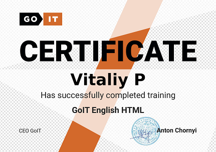
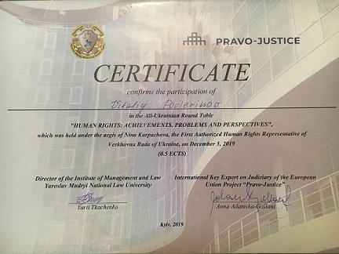

Front-End Developer
Vitaliy Poverenov
I'm a fully-motivated freelancer. From Kyiv. Ukraine. 27 y.o. I'm an enthusiastic,
responsible and hard working IT person.
I want to make responsive web-sites and practises to provide clean, validated and top quality code.
Work experience
Front-end developer freelance
2021 - Up to now
- Creating responsible web-sites using HTML5 + CSS3
- Go-it Company Marathon (practice) +
- Creating different site structures using WordPress
Some IT projects
- https://hellenglish.goit.global/ ................. [HTML] [CSS]
- https://kidslike.goit.global ........................ [Java Script]
- https://cryptohub.goit.global ..................... [React] [NOde.JS]
Prosecutors Kyiv obl
April 2017 - 2020 Dec
Head IT speacialist of Prosecutors of Ukraine
- Network Administrator / Technical support of OS (Windows 2007/2010) (Linux) / Active Directory users and groups management
- Good experience in files recovery / Virus Protection/ MS Office experience/ Microsoft Windows Server 2003/2008
- Have experience upgrade Cisco devices IP tel / Email communication / Social media
- Understanding of computer hardware, operating systems and applications
Quick and accurate diagnosis of network problems
Personally i did more than 100+ PCs
Head specialist of Prosecutors of Ukraine
Dec 2020 - April 2021
- A glimpse of the provisions of the laws by the authorities, such as to carry out operational-rooting activities, intelligence, pre-trial services
- The rules of the law at the vison of the court decisions at the criminal right, as well as at the stagnation of the first entry into the primus character, tied with the interconnection of the special freedom of the hulks
- Have been established to fight corruption. Worked with especially important documents.
PrimoCollect Group
March 2012 - 2013 march
- Leading experts in the market for collection of overdue debts
- Specialized consulting services for banks and other financial institutions
- Have unique experience in the field of overdue debt repayment. Make top 5 at month.
My Education
- Yaroslav Mudryi National Law University 2017-2020
- Advocacy of Ukraine Crime Law
- Academy of Advocacy of Ukraine 2012-2016
- General legal training of civil Law
Certificates

